NEW 赏春光聚校友情，庆华诞期新愿景——交通大学日本校友会联盟2026年春季赏樱会在东京圆满举行
2026年3月28日
燕草如碧丝，东樱似粉霞。
3月28日，由交通大学日本校友会联盟主办、西南交通大学日本校友会承办的2026年春季赏樱会在东京圆满举行。来自上海、西安、西南、北京四所交通大学的在日校友及家属，与兄弟校友会的特邀嘉宾齐聚一堂，共赴这场春日盛宴。
本次活动分为午宴联谊与庭园赏花两个部分。上午11时30分，午宴在银座Grace Bali Ginza正式开始。复旦大学日本校友会会长刘炳江、武汉大学日本校友会副会长张海营、山西大学日本校友会会长丁钢柱等嘉宾受邀出席。此外，西南交通大学上海校友会的计算机79级校友高继文学姐也从上海远道而来，共襄此次盛会。
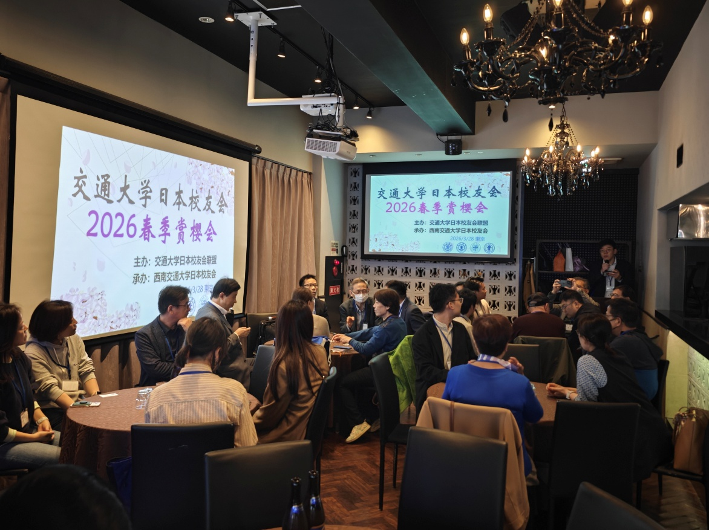
午宴伊始，在致辞环节，承办方的西南交通大学日本校友会会长何继红回顾了校友会成立11年来的发展历程，缅怀了于去年逝世的前会长刘修博先生对母校及校友会所做出的重要贡献，并介绍了第二届理事会成员及职责分工，分享了新一届理事会的理念与发展愿景。在这样一个新老交替、承前启后的时刻，上海交大（吴俊执行会长）、西安交大（郑海洋会长）以及北京交大（关丽洁执行会长）的校友会代表们也相继致辞。大家在追忆与修博学长交流往事的同时，更呼吁交通大学日本校友会联盟要继往开来，进一步加强各校友会间的合作与联系，共同推动母校发展和中日友好交流的美好愿望。
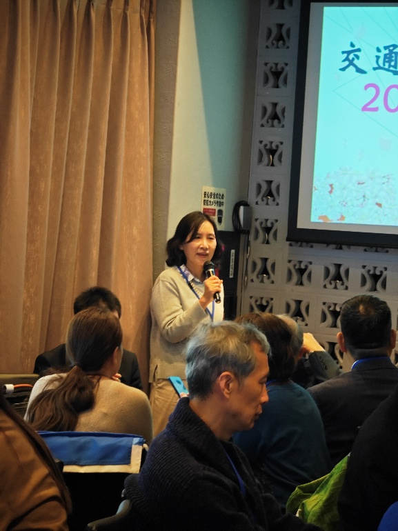
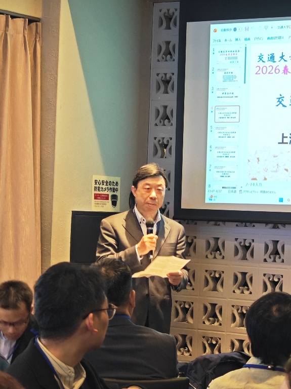
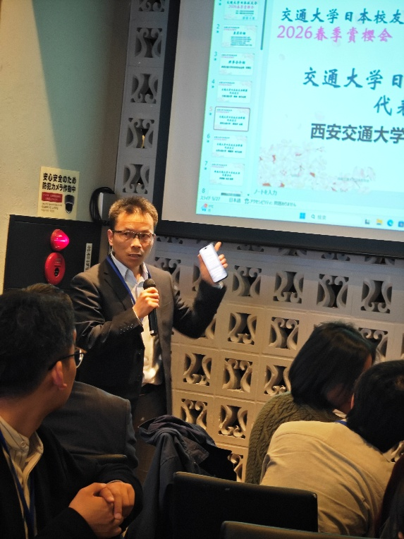
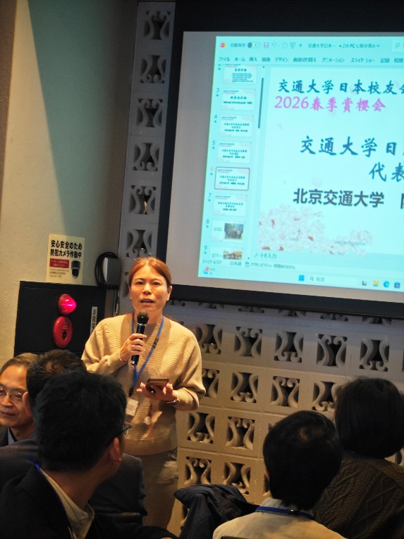
随后，西南交大日本校友会名誉会长厉国权先生致辞，午宴在热烈的气氛中正式开始。席间，校友们品尝丰盛佳肴，畅叙同窗情谊。为活跃气氛，本次活动主办方还精心安排了游戏互动与抽奖环节。小朋友们踊跃参与，校友们则在团队协作中斗智斗勇，现场笑声四起，其乐融融。Bingo抽奖环节更是将气氛推向高潮，大家在轻松愉快的互动中拉近了彼此的距离。
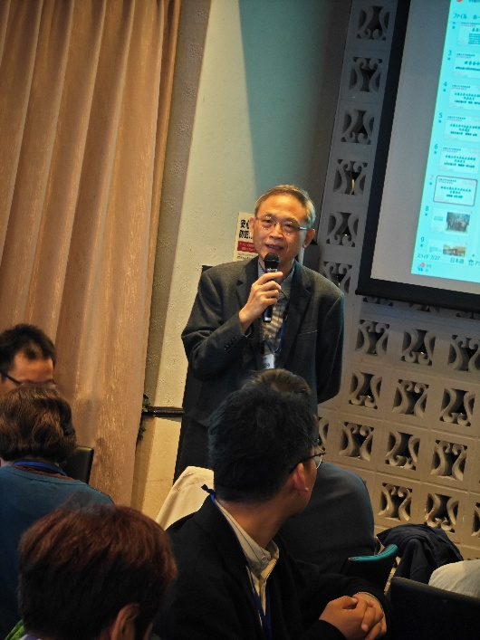
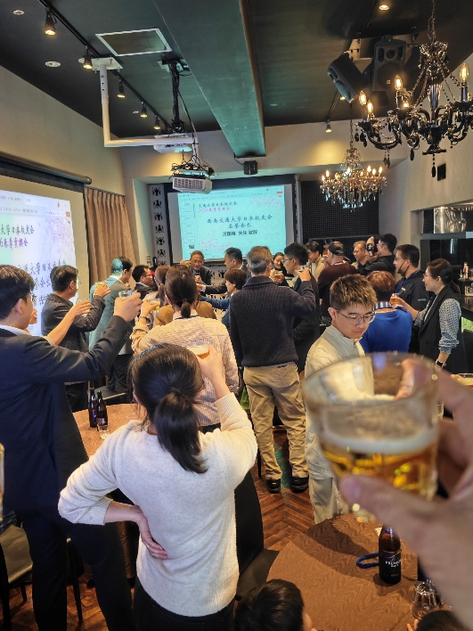
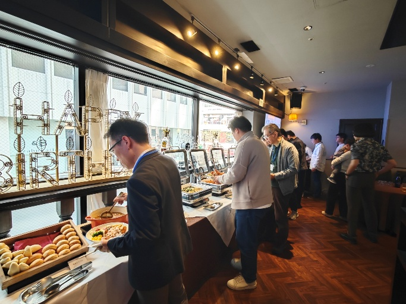
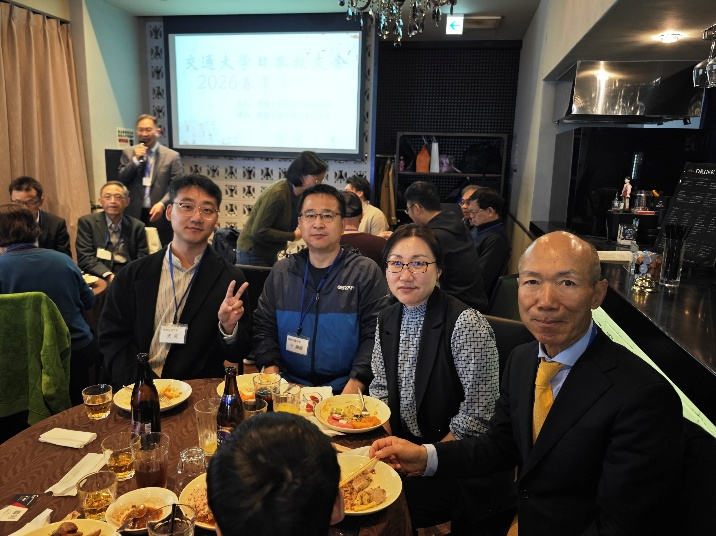
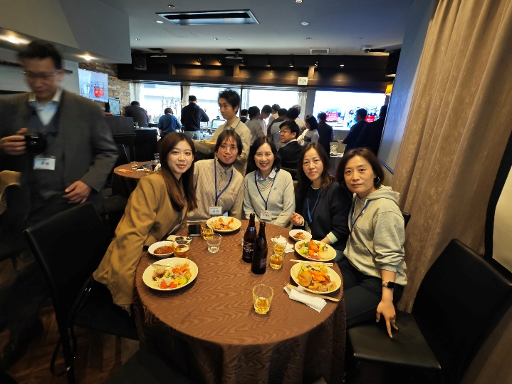
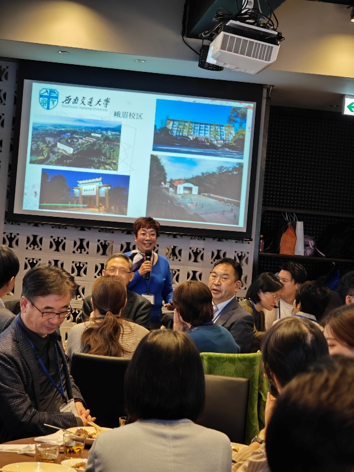
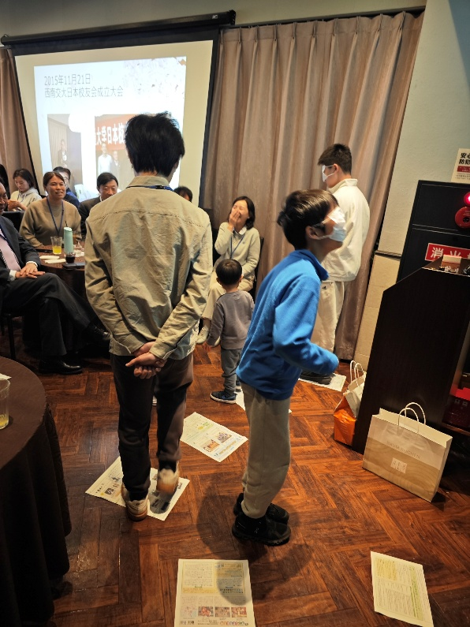
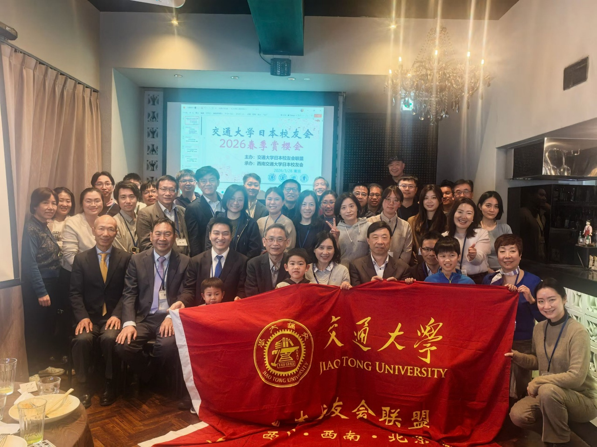
午宴结束后，大家结伴步行前往附近的滨离宫恩赐庭园赏花。这座被指定为东京都文化遗产的庭园，巧妙融合了江户、明治至大正时代的园林风格。园内三百年的古松苍劲挺拔，盛放的樱花如云似霞，雅致的亭阁池水与远处的现代高楼交相辉映，别具一格。校友们漫步于园中，纷纷在樱花树下合影留念。游园之后，大家便在樱花树下铺上坐垫席地而坐，分享茶点，共叙情谊，畅谈未来，尽享春日的美好时光。
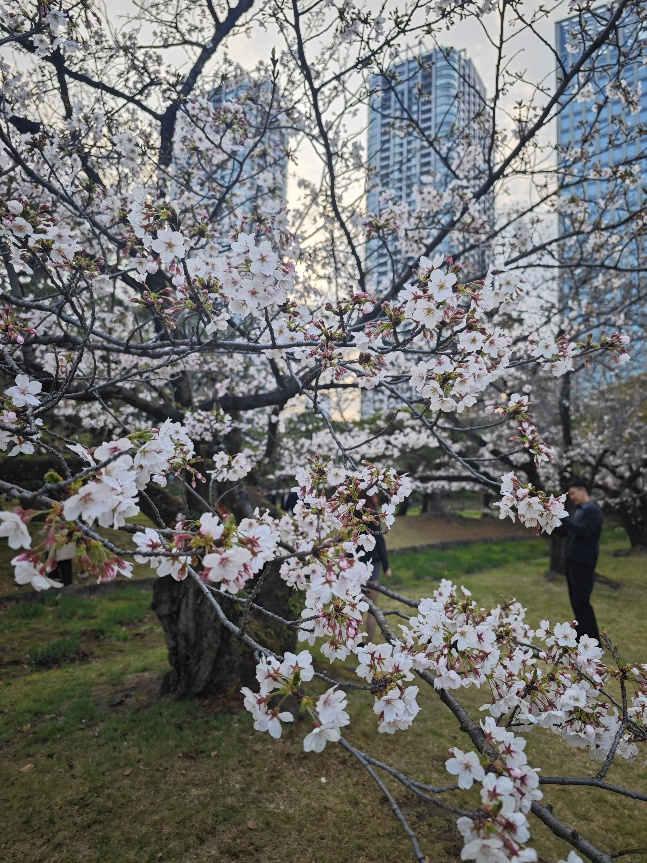
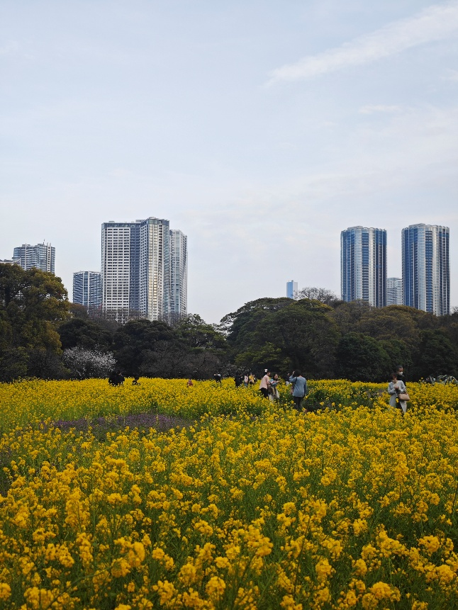
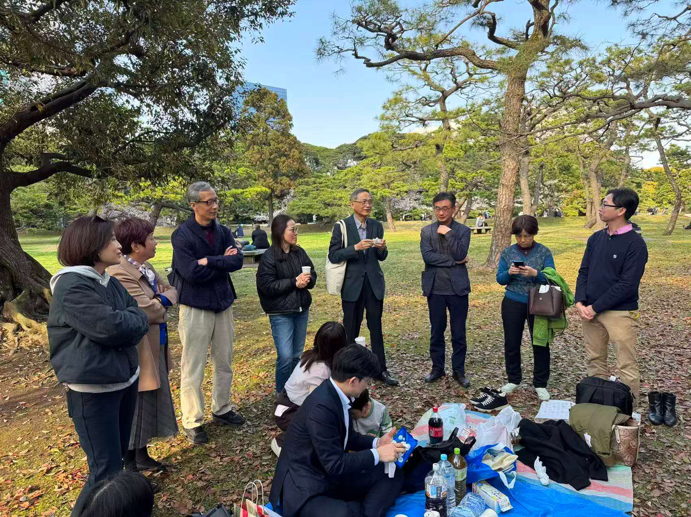
2026年正值母校交通大学建校130周年华诞。樱花树下，校友们录制了祝福视频，为母校华诞送上了最真挚的祝愿。
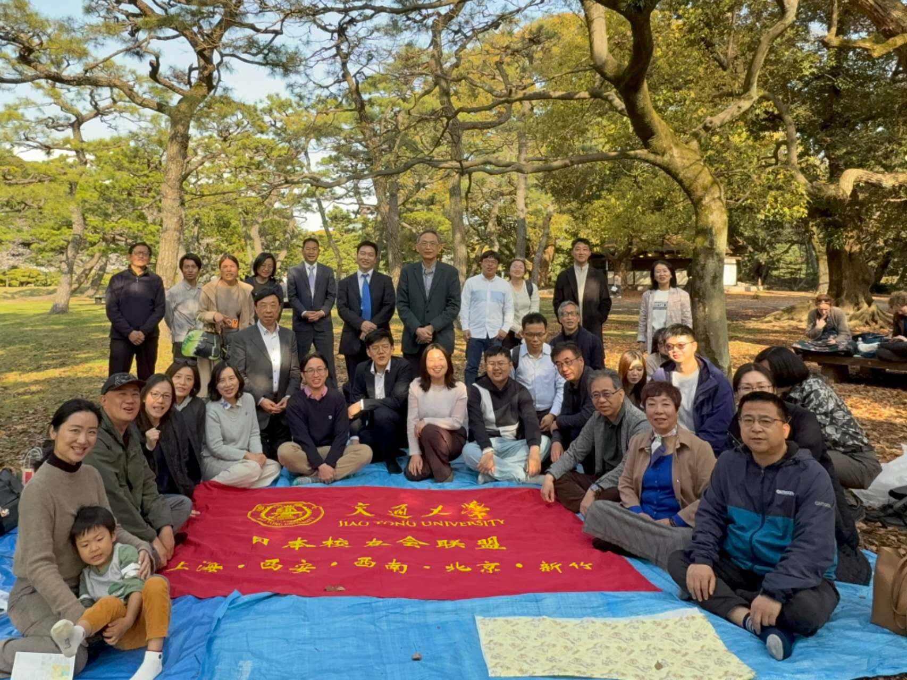
在校友们的欢声笑语中，本次春季赏樱会圆满落下帷幕。